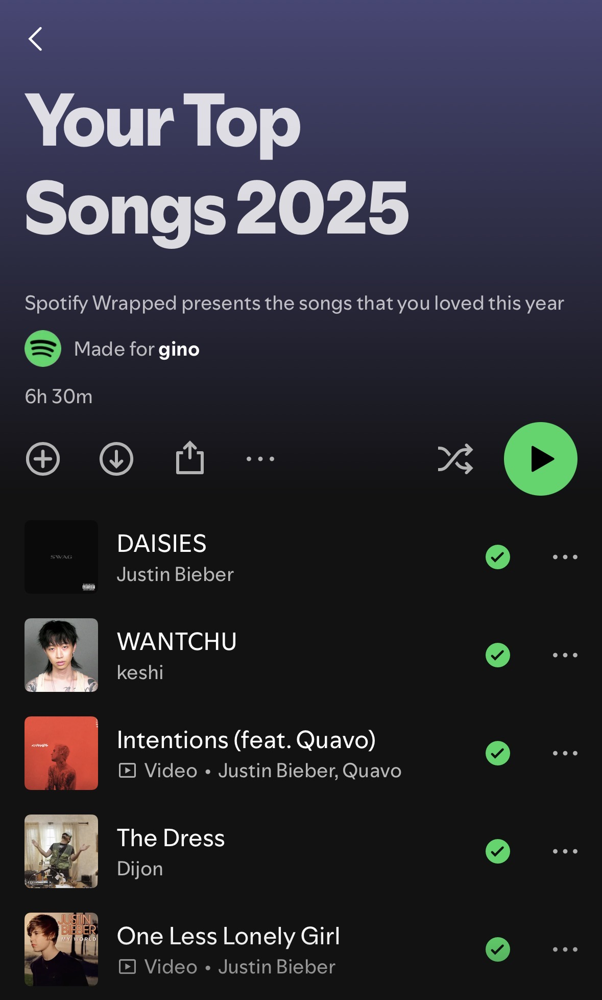
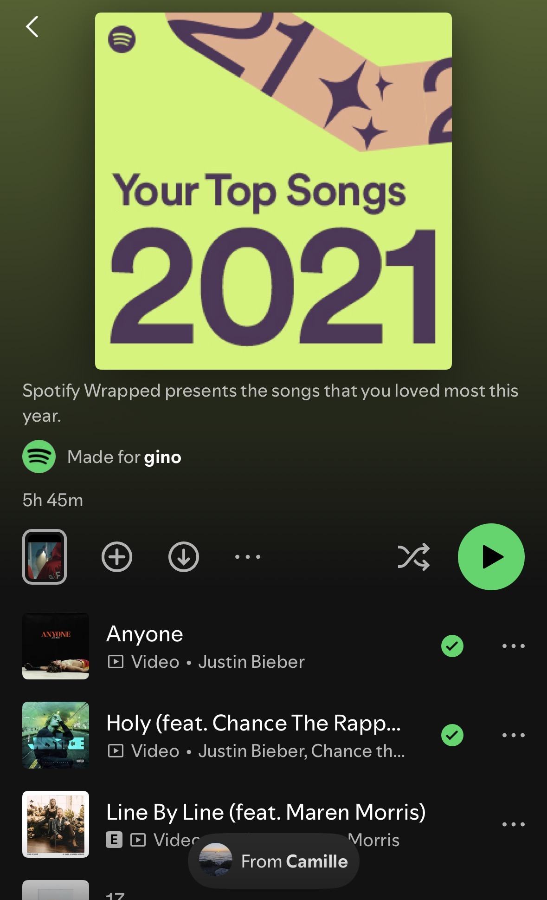

I’ve talked about birth flowers here a few times before.
Well, it’s my birth month. It also means that it’s the daisy month. There’s much for me to reflect about April, but one thing is standing out right now.
I’m on a massive high at the moment from Justin Bieber’s Coachella performance this month. It made me relive experiences I had listening to his songs, his journey, and how his transformation serves as a reflection of my various life journey.
To top it all off was his unexpected release of SWAG and SWAG II last year which easily became my most favourite release of that year. DAISIES even became no. 1 of my Wrapped on that year as well. That album embodied everything I love about listening to Justin Bieber: lovingly-crafted, sometimes-cheesy lyrics, with subtle hints of R&B and sometimes pop music. It probably didn’t become as famous as his previous songs, but it is probably the closest I’ve felt listening to his other underrated favourite album, “Journals.”

Despite being a massive pop artist, it’s undeniable how gifted Justin is with R&B through Journals, especially with it being released in 2014 (which is arguably the lowest point of his career - and probably my life at one point too.) Moreover, he grew up a faithful Christian and lives life through prayer. R&B music is fundamentally rooted in African-American worship songs which isn’t surprising when he’s mentored by Usher early on his career, cited Michael Jackson as an inspiration for both his Pop and R&B style, and has collaborated with prominent black R&B artists such as Daniel Caesar, SZA, and Dijon.
I guess what I want to talk about is how I celebrate the month of April through Justin’s music. How I want to celebrate daisies as a symbolism of my innocent-type of love, purity, and loyal love which are exemplified through his beautiful R&B tones. I want to celebrate tunes of worship and love to the people I love, and even in instances I feel close to God.
Listening to Justin Bieber as a Love Language (My World.)
It was maybe 2011 where my mom and her badminton friends would celebrate Christmas together. We were young and innocent kids. I was 11-years-old, she was 9-years-old. She was obsessed with pop music, and much like any kids then, she was obsessed with Justin Bieber. I wasn’t that obsessed with music back then. My only knowledge of music back then was some 2000s pop songs which my mom would usually play in the car, especially on long car rides going to our hometown (Batangas,) some weird Michael Jackson obsession because he just recently died and my mom gave me a DVD collection of his songs, and some pop music which my friends online were introducing me to - including Justin Bieber.
Anyway, I shifted between playing with her brother and her cousin in the “boys” room playing a game on one of those first-generation iPads where you have to smash the iPad to destroy some kind of wall or something; and going to the “girls” room where she was where they were just listening to music (lol.) I got curious at one point and listened in. We listening together to Justin Bieber just blasting random pop music such as “Baby” (of course), “One Less Lonely Girl,” etc.
I didn’t really have any feelings for her then, but it was definitely the start. If listening and bonding to a specific artist together is a love language, then I’m very glad it just happened to be Justin Bieber and not some emo, toxic, self-loathing band (iykyk) because there’s something so heart-achingly sweet and innocent about someone introducing you to “One Less Lonely Girl” and just singing it together.
Of course, I sort of ruined it because in typical stupid-boy fashioned, I shared a satire Onion article (I didn’t know it was satire then) claiming Justin Bieber was an undercover pedophile (neither of us knew what it meant - we’re more surprised it’s some old dude) in a mask (lol.)
Toxicity (Believe - Purpose.)
Unfortunately, I had to face growing-up. I had to come into terms of my reality and “tried” to find my purpose in this world.
I think men go through this “edgy” phase especially without the proper emotional support from parents/family. For me, I think it started in 2013 until 2019 where I had this sort of “loner” tendencies and a generally-negative worldview.
Nevertheless, during these years, most of Justin’s music was very fuckboy-coded. Admittedly, I never really liked Believe, nor Purpose; but I absolutely LOVED Journals. I firmly believe that Journals had set the seed to what would eventually become the gem that is SWAG.
These years were very turbulent as I was on-and-off yearning for the same girl, but at the same time; feel some sense of dread and hopelessness that become very unhealthy. I could probably go into lengths into the specifics of how I felt, but most of it is buried memories at this point which is very difficult to unravel. I think selective memory is serving me well right now and I guess it’s best to keep them buried.
Reliving Love (Changes - Justice.)
I think another lowest point I had was in 2019 (which is also the semester where I had the lowest grade ever.) When the Pandemic hit, I felt I needed that reset in a way because I really didn’t know how to navigate that turbulent period.
For her, had stopped talking for a bit, but in 2020, she came back. I remember going over the freshies list for our degree program’s orientation seminar and surprised to see her name in the list also taking Life Sciences, then suddenly, that child-like love slowly crept its way back to me.
It was also around this year where I start taking more advanced Philosophy and Theology classes which slowly changed my world-view and thinking. Slowly, somehow, thinks started to make some sense? It wasn’t stable, but I think I realised something important: I need to make myself “deserving” of “it.”
The reason why all the relationships I had back then didn’t really go anywhere was because I’m scared. I was scared that my negativity and pessimism will only make me drag my partner downwards - and I don’t want that. I don’t want to be sharing sad, self-loathing songs with them. Much like my experience back in the early 2010s, I want to sing happy love songs together; I want to us to worship one another for the better. It wasn’t long that I realised that this young innocent love is what love actually is; not some emo “I hope we can just die together” type of thing.

We started talking more in 2021. Honestly, 2021 is probably my most favourite Spotify Wrapped List. I remember obsessing over the song “Holy” by Justin Bieber because that’s just what it is when you’re in-love: you worship the person; to be so amazed back, thank God for brining this amazing person into your life, and to run to the altar out of sheer love and gratitude. (Side-note, the last note Justin made in his SNL performance was magical.)
We used to stay up late at nights just watching whatever movies and YouTube videos online. I can recount watching the song “10,000 hours” with her and being able to briefly relieve that young love I once experiences. I think it’s poetic that the last song we watched was “Ghosts” from the Justice album.
Unfortunately, by the end of 2021, she just left without a word; and the story just ends there. I tried waiting for a bit more but I gave up. I went through some rough phases towards the end of college - mostly because of some post-graduation depression where I didn’t know what to do anymore. Eventually, I left. I left the country and had just let-go of whatever it is I “had” back there.
Maturation, Worship, and some Blues (SWAG - SWAG II)
I am now suddenly a lot older at 26. It’s April and had just relived those experiences while watching Justin Bieber’s Coachella performance.
Suddenly, this album has a whole different meaning to me under a different context. To me, it’s more mature, it’s more certain, it’s more.. for love.
Just a few months ago, I had first listened to SWAG and being so full of love while listening to DAISIES. I talked about daisies and it’s symbolism to me and my essence.
Reflecting on it now, I am not writing about “her” or what we had, but about “me.” After all, I was the one born in April (she was born January 21 - what even is the January birth flower?) Maybe the reason why I want to hold onto daisies so much because it reflects a lot about how I love - purity, innocence, and immense loyalty.
Going back to this album and why I appreciate this and R&B songs so much; I’ve read somewhere saying: “If you can’t worship your partner, what even is the point?”
R&B has very deep ties to African-American worship songs. I think the recent movie, “SINNERS” best exemplifies this where music has the tendency to speak to your soul - to make you feel connected to someone/something. Early R&B for African-Americans is they way to be connected to God, it is their immensely personal form of worship.
While I’m not really a practicing Catholic, I do believe in God and admittedly, I do pray. (I have lots to say about religion which I’m currently writing on.) I learned back then to always go for “where you think you see God/Jesus” and you would be surprised that it is not always where the Church or any pastor would tell you to. I used to find God through the poor and less fortunate, that’s why I liked helping them back then. But I also used to find God in the people whom I loved. I tell myself: how do I know when “something” feels right? The best answer is probably “if you see God through them, then it should feel right.”
I'm kissin' you, hallelujah
Dream of you, hallelujah
Look at you, hallelujah
I'm lovin' you, hallelujah
And I can make you laugh like I'm supposed to
And girl, I'll hold you close like I'm supposed to
Oh, I'll make you move like you supposed to (
We can take it all the way
Show you that you matter like I'm 'posed to
All of these emotions that we go through
Ooh, I'll never let you go
How come it ain't easy just to let it go?
Okay honey, I’m with you if you need.
I made you a promise
I told you I’d change
It’s just human nature
These growing pains
And baby, I ain’t walking away.
Whatever it is, you know I can take it
I’m counting the days, how many days ‘til I can see you again?
Happy Daisy Month.
Happy April.
AMDG.